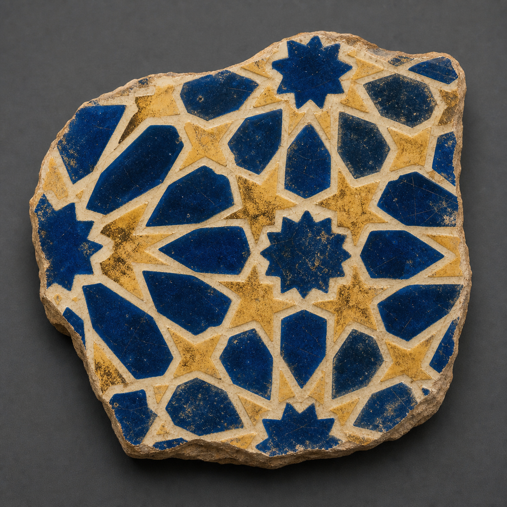
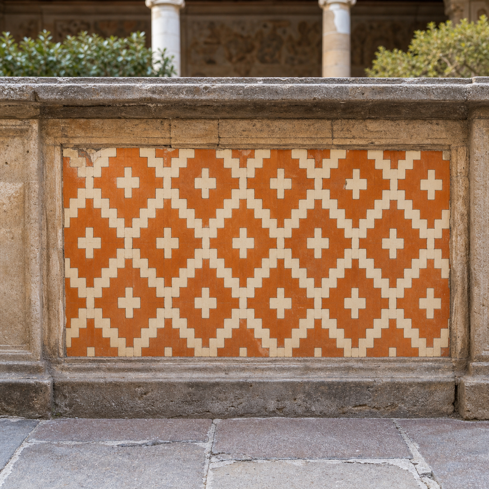
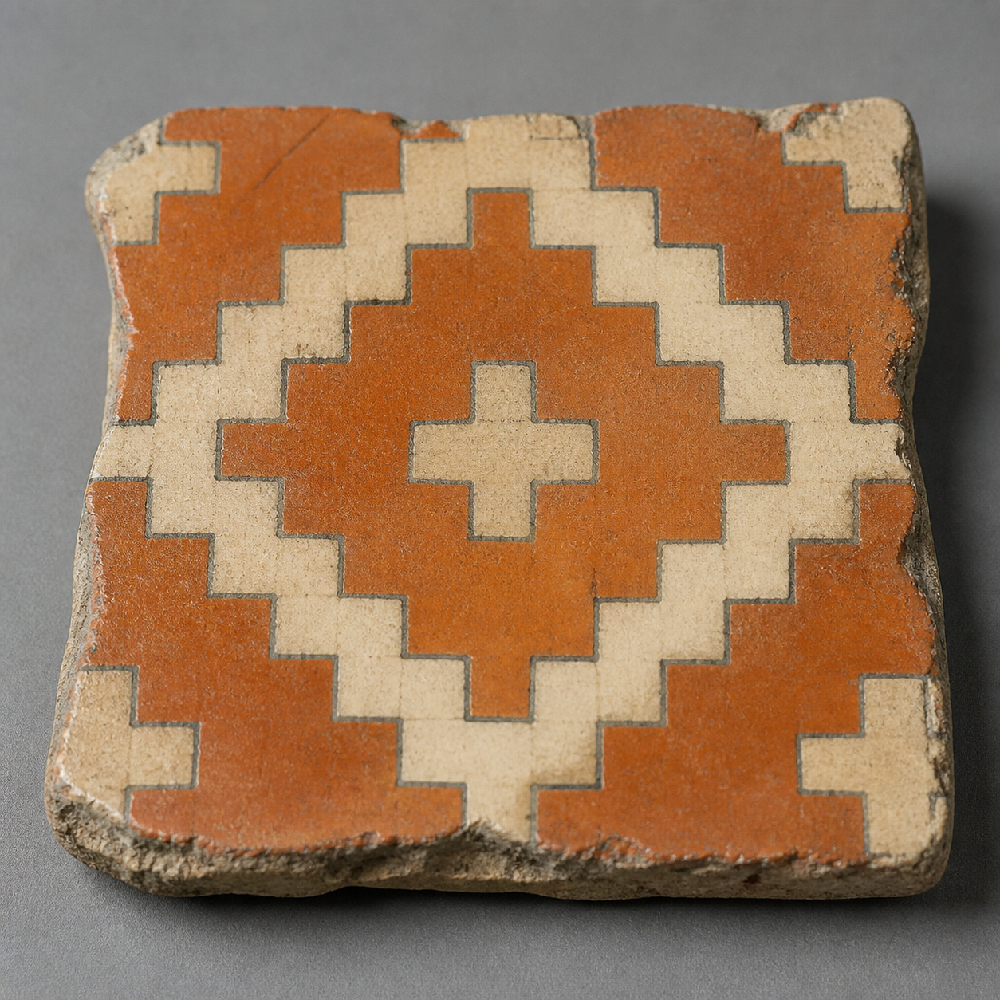
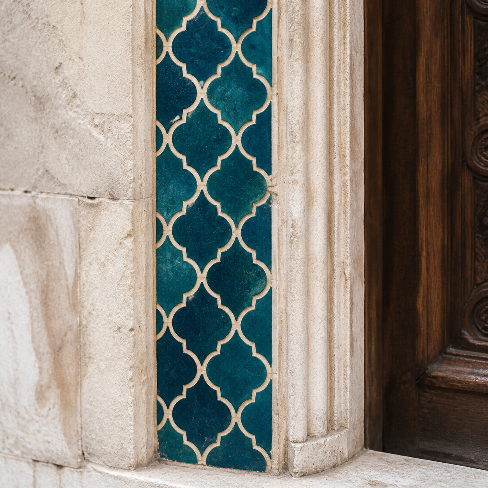
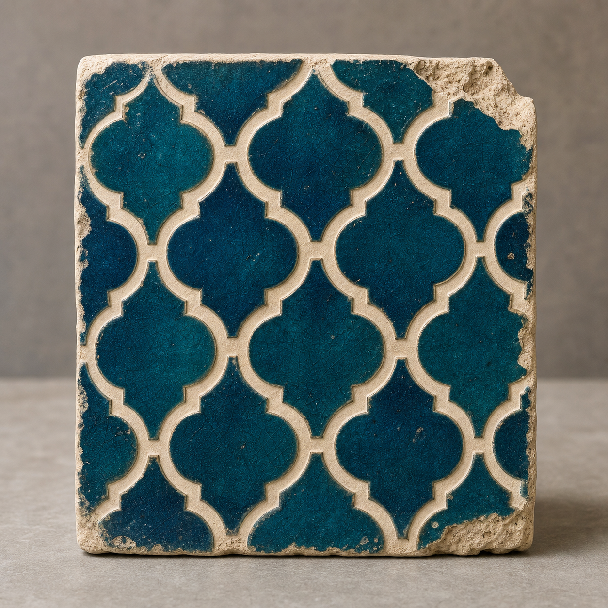
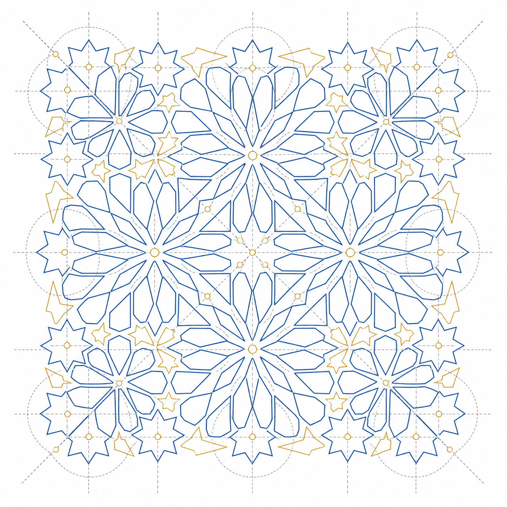
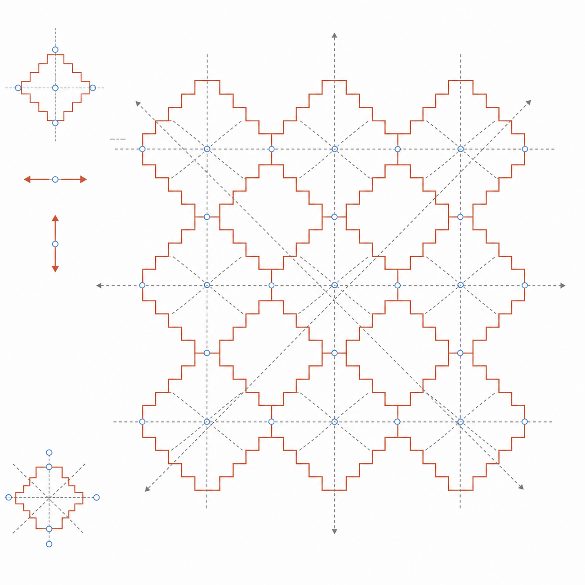

Study Abroad Program Finder
Study Abroad Program Finder

Personal Knowledge Atlas
Campus Life Companion
Interfaces for Comparative Choice
Small Archives, Long Memory
Designing With Incomplete DataAbout
I study how people search, compare, remember, and make decisions with digital interfaces.
My work combines research, prototyping, and front-end implementation, with a particular interest in educational systems, archival interfaces, and small tools that make complex information easier to inspect. The image grid above is structured as a research index: replace each placeholder with photographs, screenshots, diagrams, or process images from your real projects.

Interface Sketches Filter StudiesWriting
- Interfaces for Comparative Choice, working note, 2026.
- Small Archives, Long Memory, essay draft, 2025.
- Designing With Incomplete Data, project note, 2025.

Visual Notes Archive ToolsCV
- Education
- Add institution, program, advisor, and expected graduation.
- Methods
- Interviews, surveys, comparative analysis, prototyping.
- Tools
- HTML, CSS, JavaScript, Python, Figma, Git, spreadsheets.